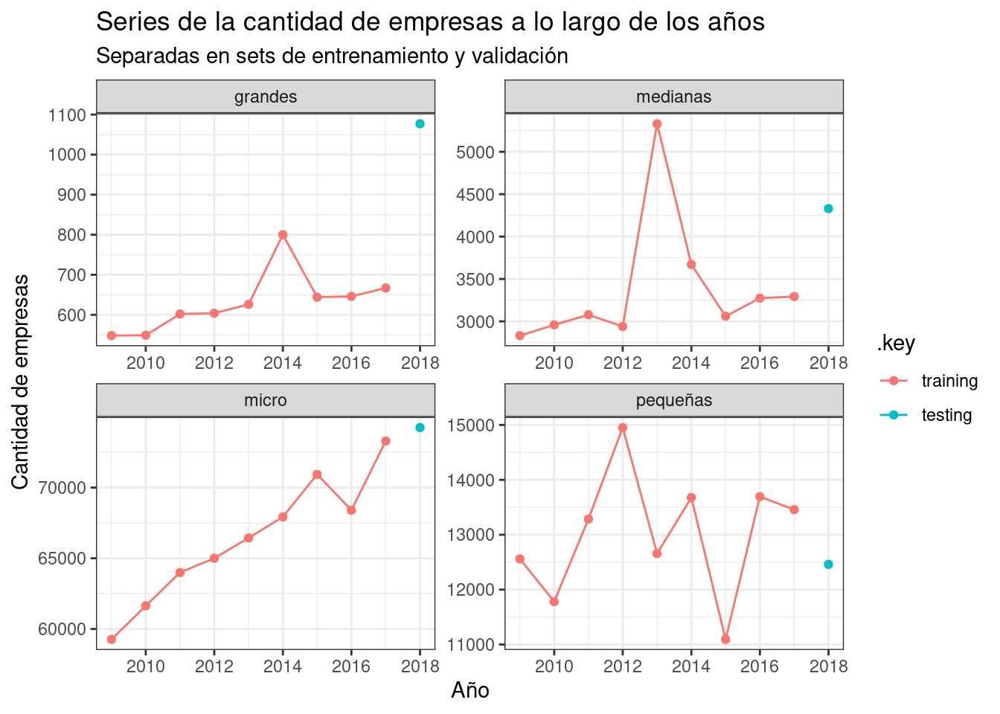

Para el siguiente análisis utilizaremos datos de múltiple fuentes que nos ayudarán a explicar el fenómeno de las empresas de distinto tamaño en Uruguay a través de variables indicadoras de la situación económica del país y de variables relacionadas a las empresas mencionadas.
Porcentaje de personal presupuestado en el total de funcionarios de los gobiernos departamentales.
part_act_econ
Participación porcentual del departamento en la actividad económica país.
Ánalisis exploratorio
Al trabajar con datos es natural hacerse preguntas sobre la composición y características de los mismos, es en éste siguiente análisis que intentaremos dar respuestas de manera visual y con medidas de resúmenes numéricas para familiarizarnos con nuestra base de datos.
# A tibble: 6 × 20
anio departamento tamanio sector n_empresas n_nacimientos n_muertes
<chr> <fct> <ord> <fct> <chr> <chr> <chr>
1 2008 artigas micro a 44 sin datos 8
2 2008 artigas micro b 27 sin datos 6
3 2008 artigas micro c 114 sin datos 21
4 2008 artigas micro d 1 sin datos 1
5 2008 artigas micro e 13 sin datos 4
6 2008 artigas micro f 28 sin datos 6
# ℹ 13 more variables: alfabetismo <dbl>, accesos_a_estudios_terciarios <dbl>,
# anios_de_educacion_promedio <dbl>, promocion_educacion_media_cb <dbl>,
# pobreza <dbl>, informalidad <dbl>, desempleo_en_jovenes <dbl>, gini <dbl>,
# acceso_a_internet <dbl>, ingresos_de_los_hogares <dbl>,
# tasa_de_desempleo <dbl>,
# porcentaje_de_personal_presupuestado_en_la_intendencia <dbl>,
# part_act_econ <dbl>
Últimas 6 filas
Code
pymes_df |>tail()
# A tibble: 6 × 20
anio departamento tamanio sector n_empresas n_nacimientos n_muertes
<chr> <fct> <ord> <fct> <chr> <chr> <chr>
1 2021 treinta y tres grandes d sin datos <NA> <NA>
2 2021 treinta y tres grandes g 1 <NA> <NA>
3 2021 treinta y tres grandes h sin datos <NA> <NA>
4 2021 treinta y tres grandes k sin datos <NA> <NA>
5 2021 treinta y tres grandes l sin datos <NA> <NA>
6 2021 treinta y tres grandes q 1 <NA> <NA>
# ℹ 13 more variables: alfabetismo <dbl>, accesos_a_estudios_terciarios <dbl>,
# anios_de_educacion_promedio <dbl>, promocion_educacion_media_cb <dbl>,
# pobreza <dbl>, informalidad <dbl>, desempleo_en_jovenes <dbl>, gini <dbl>,
# acceso_a_internet <dbl>, ingresos_de_los_hogares <dbl>,
# tasa_de_desempleo <dbl>,
# porcentaje_de_personal_presupuestado_en_la_intendencia <dbl>,
# part_act_econ <dbl>
6 filas aleatorias
Code
#label: rand6pymes_df |>sample_n(6)
# A tibble: 6 × 20
anio departamento tamanio sector n_empresas n_nacimientos n_muertes
<chr> <fct> <ord> <fct> <chr> <chr> <chr>
1 2022 colonia micro r 145 28 16
2 2018 soriano grandes p sin datos sin datos <NA>
3 2022 tacuarembo medianas j sin datos <NA> <NA>
4 2010 treinta y tres pequeñas j 10 sin datos sin datos
5 2008 lavalleja pequeñas c 37 sin datos 2
6 2014 rivera grandes c sin datos <NA> <NA>
# ℹ 13 more variables: alfabetismo <dbl>, accesos_a_estudios_terciarios <dbl>,
# anios_de_educacion_promedio <dbl>, promocion_educacion_media_cb <dbl>,
# pobreza <dbl>, informalidad <dbl>, desempleo_en_jovenes <dbl>, gini <dbl>,
# acceso_a_internet <dbl>, ingresos_de_los_hogares <dbl>,
# tasa_de_desempleo <dbl>,
# porcentaje_de_personal_presupuestado_en_la_intendencia <dbl>,
# part_act_econ <dbl>
Es fácil de observar que existen variables numéricas que contienen observaciones de tipo character representando a valores faltantes y, al mismo tiempo, también observamos la existencia de valores NA.
Entonces, nos preguntamos:
¿Cuál es el porcentaje de datos faltantes existe por cadá variable?
Note
Como se vio en las observaciones seleccionadas, existen datos faltantes representados con texto por lo que necesitaremos pre-procesar esas columnas y normalizar la representación de un dato faltante como NA. Luego formalizaremos este pre-procesamiento como parte del flujo pre-modelado.
Code
pymes_df |>mutate(across(starts_with("n_"), ~as.numeric(na_if(.x, "SIN DATOS")))) |>mutate(across(where(is.numeric), ~round(.x, 3))) |>summarise_all(~sum(is.na(.x))) |>pivot_longer(cols=everything(), names_to="variable", values_to="cant_faltantes") |>mutate(pct_faltantes = cant_faltantes *100/nrow(pymes_df)) |>mutate(variable =fct_reorder(variable, cant_faltantes)) |>ggplot(aes(x=variable, y=pct_faltantes)) +geom_col(fill="skyblue") +labs(title="Porcentajes de datos faltantes por variable.", x="Variable", y="Porcentaje de faltantes") +coord_flip()
¿Y si subimos un nivel de agregación ignorando el sector?
Code
agg_pymes_df <- pymes_df |>mutate(across(starts_with("n_"), ~as.numeric(na_if(.x, "SIN DATOS")))) |>mutate(across(where(is.numeric), ~round(.x, 3))) |>group_by(anio, departamento, tamanio) |>summarise(across(starts_with("n_"), ~sum(.x, na.rm = T)), across(!starts_with("n_") &!matches("sector"), ~mean(., na.rm=T))) |>mutate(across(where(is.numeric), ~if_else(is.nan(.), NA, .)))agg_pymes_df |>ungroup() |>filter(tamanio !="grandes") |>select(!c(anio:tamanio)) |>pivot_longer(everything(), names_to="variable", values_to="cant_faltantes") |>mutate(cant_faltantes =if_else(is.na(cant_faltantes), 1, 0)) |>group_by(variable) |>summarise(cant_faltantes =sum(cant_faltantes)) |>mutate(pct_faltantes = cant_faltantes *100/nrow(agg_pymes_df)) |>mutate(variable =fct_reorder(variable, cant_faltantes)) |>ggplot(aes(x=variable, y=pct_faltantes)) +geom_col(fill="skyblue") +labs(title="Porcentajes de datos faltantes por variable sobre el total de observaciones.",subtitle="Aperturado por año, departamento y tamaño.",x="Variable",y="Porcentaje de faltantes" ) +coord_flip()
Podemos concluir que al estar tan desagregado nuestro Dataset los datos faltantes pasan a ser un problema a tener en cuenta. A partir de este punto realizaremos nuestro análisis con el dataset aperturado por año, departamento y tamaño.
¿Estos NA pertenecen a algún período de tiempo particular?
Se puede observar que que la mayoría de variables numéricas tienden a tener bastantes datos atípicos atípicos lo que genera que las medidas de apartamiento se vean afectadas y haya una diferencia importante entre las medianas y medias de cada variable. A su vez, a excepción de las variables sobre pymes, tienden a tener una forma parecida a una normal con cola alargada (positiva o negativa depende mucho del caso).
¿Cómo se relacionan las distintas variables numéricas con la cantidad de empresas?
Se puede observar claramente que las variables socio-educativas y económicas son a nivel departamento y que el tamaño de empresa cambia la dispersión de la cantidad de empresas contra las otras variables.
¿Cómo evolucionan los variables de pymes a lo largo de los años?
Code
pymes_df |>mutate(across(starts_with("n_"), ~as.numeric(na_if(.x, "SIN DATOS")))) |>mutate(across(where(is.numeric), ~round(.x, 3))) |>select(-sector, -departamento, -tamanio) |>group_by(anio) |>summarise(across(starts_with("n_"), ~sum(.x, na.rm=T))) |>ungroup() |>mutate(anio =as.numeric(as.character(anio))) |>pivot_longer(-anio, names_to="variable", values_to="valor") |>ggplot(aes(x=anio, y=valor, color=variable)) +geom_line() +labs(title="Evolución de la cantidad de empresas, muertes y nacimientos.",subtitle="A nivel nacional y por año.",x="Año",y="Cantidad" ) +theme_bw()
¿Y por tamaño de la empresa?
Code
pymes_df |>mutate(across(starts_with("n_"), ~as.numeric(na_if(.x, "SIN DATOS")))) |>mutate(across(where(is.numeric), ~round(.x, 3))) |>select(-sector, -departamento) |>group_by(anio, tamanio) |>summarise(across(starts_with("n_"), ~sum(.x, na.rm=T))) |>ungroup() |>mutate(anio =as.numeric(as.character(anio))) |>pivot_longer(c(-anio, -tamanio), names_to="variable", values_to="valor") |>ggplot(aes(x=anio, y=valor, color=variable)) +geom_line() +facet_wrap(~ tamanio, scales="free") +labs(title="Evolución de la cantidad de empresas, muertes y nacimientos.",subtitle="A nivel nacional, por año y sector.",x="Año",y="Cantidad" ) +theme_bw()
Se tiene que, en general, las muertes y nacimientos se mantienen con poca variación (habría que comprobar que no haya una variable oculta) y que éxisten outliers para las empresas de mayor tamaño mientras que las micro siguen una tendencia creciente pero no así las pequeñas que son más variables en el tiempo.
Preprocesamiento de datos
Como se pudo observar durante la fase del EDA, nuestro dataset crudo tiene problema de consistencia e incompletitud en los datos que, en ésta sección, abordaremos para transformarlo hacia un dataset que nos permita realizar una predicción lo más confiable posible.
Débido a esto es que realizaremos las siguientes transformaciones antes de modelar:
Utilizaremos año, departamento y tamaño como apertura.
Transformaremos todos los datos faltantes a NA.
Redondearemos a 3 decimales las variables numéricas.
Utilizaremos la serie sin datos faltantes (2008-2018)
Es de nuestro interés la creación de un modelo predictivo de la variable n_empresas y, para cumplir con dicho objetivo, utilizaremos el resto de variables como predictores de n_empresas tratando de modelar cómo la situación educacional, social y económica de cada departamento influye en la creación de Pymes.
Empezaremos estableciendo un punto de partida con un modelo “baseline” que queremos superar con modelos más complejos que sepan inferir las relaciones complejas en éste problema multidimensional.
Separación en datos de entrenamiento y de validación
En un problema de predicción, la separación de entrenamiento difiere un poco de lo que se hace para una regresión ya que al querer generar un modelo que predice el futuro nuestra validación reside en que tan bien éste predice en comparación a un evento que realmente ocurrió.
Una práctica común al momento de hacer ésta separación de datos es la de separar basados en tu horizonte de predicción (cuantos puntos a futuro se quiere predecir). Utilizando ésta referencia es que utilizaremos el 2017 como punto de separación
Code
splits <- series_df |>mutate(anio =as.Date(paste0(anio, "-01-01"))) |>time_series_split(initial="9 years", assess ="1 years")train <-training(splits)test <-testing(splits)splits |>tk_time_series_cv_plan() |># mutate(set = if_else(as.numeric(anio) <= 2017, "train", "test")) |>filter(departamento =="montevideo") |>ggplot(aes(x=anio, y=n_empresas, color=.key)) +geom_point() +geom_line() +facet_wrap(~ tamanio, scales="free") +labs(title="Series de la cantidad de empresas a lo largo de los años",subtitle="Separadas en sets de entrenamiento y validación",x="Año",y="Cantidad de empresas",fill="Set" ) +theme_bw()

Regresión lineal
Para nuestro modelo base, eligiremos una regresión lineal como nuestro modelo base. Éste es un modelo básico al momento de capturar relaciones complejas o no lineales ya que se basa en la estimación de nuestra variable de interés (y) dada la sumatoria del resto de predictores (\(x_i\)) por un coeficiente (\(b_i\)) y un error (\[\varepsilon_i\]), tal que:
Entrenaremos dos tipos distintos de árboles para intentar capturar eficientemente las variables de mayor peso al momento de estimar la cantidad de empresas.
Para ello, primero haremos una búsqueda de hiperparámetros y luego seleccionaremos el mejor modelo en base al RMSE como métrica de minimización elegida. Ésta métrica es elegida en base a su poder de interpretabilidad al estar en las mismas unidades que la variable a predecir.
Bosque aleatorio
Random Forest es una técnica de ensamble basada en árboles de decisión y en el principio de bagging. Este método entrena múltiples árboles de decisión en subconjuntos aleatorios del conjunto de datos, y combina sus predicciones mediante promedio, lo cual reduce significativamente la varianza del modelo individual.
Random Forest es particularmente adecuado en este contexto porque:
Es robusto frente al sobreajuste, especialmente cuando hay una alta cardinalidad en variables categóricas como el departamento.
Captura bien interacciones y no linealidades.
Su estructura permite interpretar la importancia relativa de las variables predictoras, lo cual nos ayuda a entender la estimación.
XGBoost (Extreme Gradient Boosting), una técnica de aprendizaje supervisado basada en árboles de decisión y en el principio de boosting. Este algoritmo construye múltiples árboles de forma secuencial, donde cada árbol intenta corregir los errores del anterior. A diferencia de la regresión lineal, XGBoost permite capturar relaciones no lineales y complejas interacciones entre las variables predictoras.
# A tibble: 3 × 9
.model_id .model_desc .type mae mape mase smape rmse rsq
<int> <chr> <chr> <dbl> <dbl> <dbl> <dbl> <dbl> <dbl>
1 1 GLMNET Test 394. 514. 0.0975 87.7 789. 0.992
2 2 RANGER Test 297. 35.4 0.0736 25.6 1237. 0.998
3 3 XGBOOST Test 163. 21.2 0.0402 25.1 420. 0.999
Importancia de las variables en los árboles
Es interesante el poder explicar como se llegá a una conclusión (una predicción en este caso), para eso visualizaremos que importancia, a través del “impurity” (en el caso del random forest), se le dio a cada variable.
Observatorio Territorio Uruguay – Oficina de Planeamiento y Presupuesto (OPP). 2018. “Actividad Económica Departamental: Participación Porcentual En La Actividad Económica Nacional (2008–2018).” Conjunto de datos. Oficina de Planeamiento y Presupuesto (Uruguay). https://www.opp.gub.uy/.
Rodríguez Miranda, Andrés, Claudio Vial Cossani, Ignacio Centurión, and Mariana Pérez. 2024. “Índice de Desarrollo Regional Uruguay 2006–2022. IDERE-UY. Informe 2024.” Informe técnico. Montevideo: Facultad de Ciencias Económicas y de Administración, Universidad de la República. https://desarrolloterritorial.idere.ei.udelar.edu.uy/.